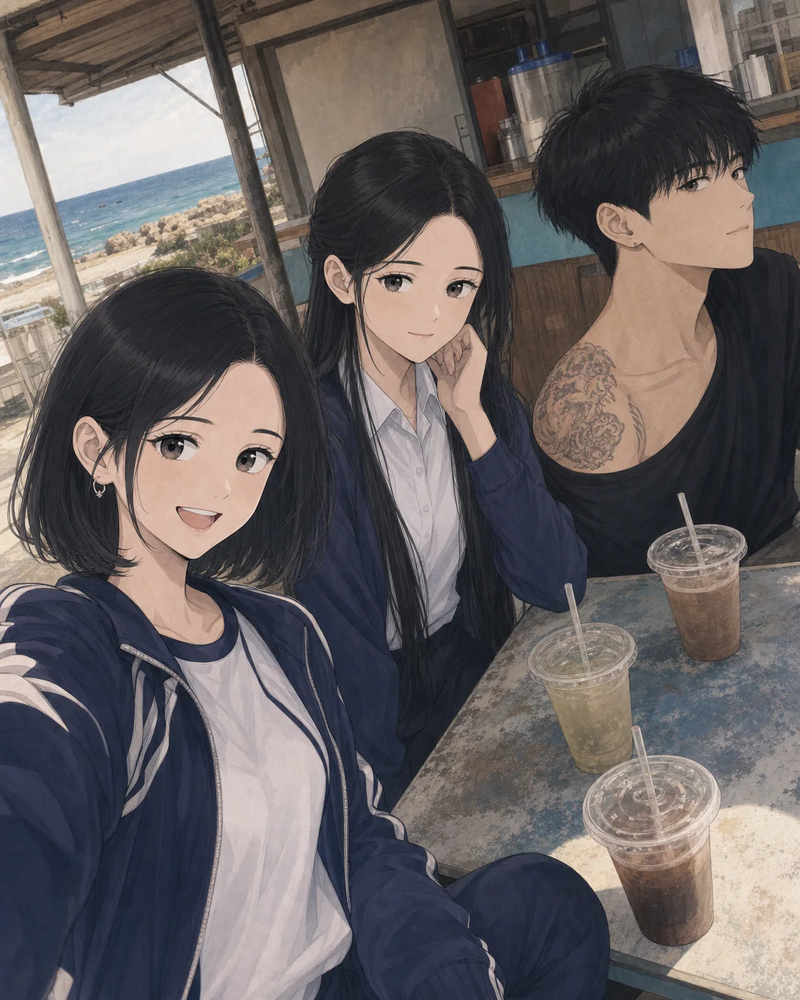
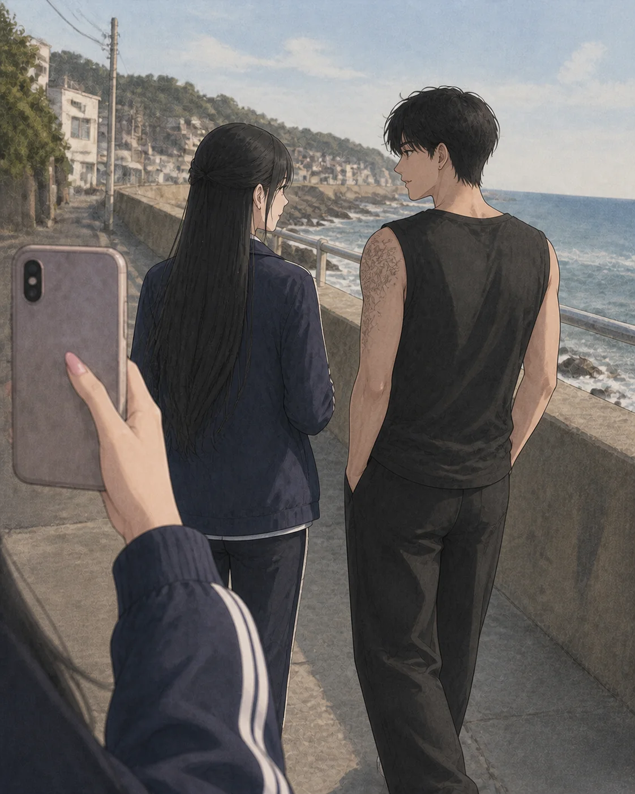

pinyu.daily
洪
27
貼文
618
粉絲
403
追蹤中
洪品妤
國二｜校刊社影像組 📷 戰鼓隊活動紀錄｜手機拍生活
追蹤中
查看訊息備份
🎒
日常blog
🥁
戰鼓隊花絮
🫶
不要臉的兩人
此頁為遊戲使用的虛構社群介面。
洪
王思潔・許承恩
手機訊息備份
5 月 13 日訊息紀錄
許承恩的手機於上班期間留在員工置物櫃
洪品妤拍攝的午後片段

海邊飲料店

沿堤防散步
📎 洪品妤的訊息備份：傍晚收到王思潔傳來「我先回去，晚點再講」。
5 月 13 日・傍晚
我回去了。
傍晚
到家講。
我還是很想搬去阿嬤那裡住。
妳過來，我會跟阿嬤講。
21:49
他打我。
21:49
我不要回去了。
21:51
你跟阿嬤說一聲，我現在過去。
21:53
▶
語音 1
22:17
▶
語音 2
22:17
🔧 修車行辨識備註：第二段語音的背景車聲近似小貨車。
☎ 王思潔撥打語音通話・未接聽 22:18
☎ 王思潔撥打語音通話・未接聽 22:20
☎ 王思潔撥打語音通話・未接聽 22:22
22:45・許承恩查看手機後
☎ 許承恩連續回撥・電話無法接通 22:45 起
按讚的人
×